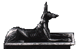
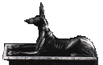

The Egyptian Book of the Dead
 1240 BC
THE PAPYRUS OF ANI
The whole book in a plain textfile
HYMN TO OSIRIS
A HYMN OF PRAISE TO RA WHEN HE RISETH IN THE EASTERN PART OF HEAVEN
Appendix: NEKHT, THE CAPTAIN OF OF SOLDIERS, THE ROYAL SCRIBE, SINGETH A HYMN..
HYMN TO OSIRIS UN-NEFER
THE CHAPTERS OF COMING FORTH BY DAY
Appendix: THE CHAPTER OF MAKING THE SAHU TO ENTER THE TUAT ON ...
THE CHAPTER OF GIVING A MOUTH...
Appendix: THE CHAPTER OF...
THE CHAPTER OF COMING FORTH BY DAY AND OF OPENING.....
TEXTS RELATING TO THE WEIGHING OF THE HEART OF ANI
THE SEVEN ARITS
THE PYLONS OF THE HOUSE OF OSIRIS
THE PRIESTS ANMUTEF AND SAMEREF
THE SPEECH OF THE PRIEST ANMUTEF.
THE SPEECH OF THE PRIEST SAMEREF.
THE JUDGES IN ANU
THE CHAPTER OF OPENING THE MOUTH OF THE OSIRIS ANI.
THE CHAPTER OF BRINGING WORDS OF POWER TO THE OSIRIS ANI
Appendix: THE CHAPTER WHICH MAKETH A MAN TO REMEMBER.......
THE CHAPTER OF GIVING A HEART TO THE OSIRIS ANI IN KHERT-NETER.
THE CHAPTER OF NOT LETTING THE HEART OF THE OSIRIS,....
HE CHAPTER OF NOT LETTING THE HEART-SOUL OF A MAN BE SNATCHEDAWAY FROM HIM IN KHERT-NETER.
Appendix: THE CHAPTER OF DRINKING WATER IN KHERT-NETER.
THE CHAPTER OF DRINKING WATER AND OF NOT BEING BURNT UP BY FIRE
THE CHAPTER OF NOT BEING BOILED IN FIRE
THE CHAPTER OF GIVING AIR IN KHERT-NETER
Appendix: THE CHAPTER OF GIVING AIR TO NU IN KHERT-NETER.
THE CHAPTER OF GIVING AIR IN KHERT-NETER
THE CHAPTER OF SNUFFING THE AIR WITH WATER IN KHERT-NETER
THE CHAPTER OF NOT LETTING THE HEART OF A MAN...
Appendix: THE CHAPTER OF NOT ALLOWING THE HEART....
THE CHAPTER OF NOT LETTING THE HEART-CASE OF A MAN....
Appendix: THE CHAPTER OF NOT LETTING THE HEART OF NU,......
THE CHAPTER OF NOT LETTING THE HEART OF NU.....
THE CHAPTER OF BREATHING THE AIR AND OF HAVING POWER OVER WATER.......
THE CHAPTER OF SNUFFING THE AIR, AND OF HAVING POWER OVER.....
THE CHAPTER OF NOT DYING A SECOND TIME IN KHERT-NETER.
THE CHAPTER OF NOT ROTTING IN KHERT-NETER.
Appendix:THE CHAPTER OF NOT LETTING THE BODY PERISH.
THE CHAPTER OF NOT PERISHING AND OF BEING ALIVE IN KHERT-NETER.
THE CHAPTER OF NOT GOING IN TO THE BLOCK OF THE GOD.
THE CHAPTER OF NOT BEING TRANSPORTED TO THE EAST IN KHERT-NETER.
THE CHAPTER OF NOT LETTING THE HEAD OF A MAN BE CUT OFF FROM HIS BODY..
THE CHAPTER OF MAKING THE SOUL TO BE JOINED TO ITS BODY IN KHERT-NETER.
THE CHAPTER OF NOT LETTING THE SOUL OF A MAN BE HELD CAPTIVE IN KHERT-NETER.
THE CHAPTER OF OPENING THE TOMB TO THE BA-SOUL AND THE SHADOW,...
Appendix:
THE CHAPTER OF LIFTING UP THE FEET, AND OF COMING FORTH ON...
THE CHAPTER OF FORCING A WAY INTO AMENTET [AND OF COMING FORTH] BY DAY.
Appendix: THE CHAPTER OF FORCING A WAY INTO THE TUAT.
ANOTHER CHAPTER OF THE TUAT AND OF COMING FORTH BY DAY.
THE CHAPTER OF COMING FORTH BY DAY AND OF LIVING AFTER DEATH.
Appendix:
THE CHAPTER OF COMING FORTH BY DAY AFTER FORCING AN ENTRANCE.....
THE CHAPTER OF MAKING A MAN TO RETURN TO LOOK UPON HIS HOUSE ON EARTH.
ANOTHER CHAPTER OF THE COMING FORTH OF A MAN BY DAY AGAINST HIS ENEMIES..
Appendix: THE CHAPTER OF COMING FORTH AGAINST ENEMIES IN KHERT-NETER.
A HYMN OF PRAISE TO RA WHEN HE RISETH UPON THE HORIZON,....
THE SOLAR LITANY
Appendix:
A HYMN OF PRAISE TO RA WHEN HE RISETH IN THE EASTERN PART OF HEAVEN.
THE CHAPTER OF THE NEW MOON
THE FOLLOWING IS TO BE RECITED ON THE DAY OF THE MONTH (NEW MOON DAY)
A HYMN TO RA [WHICH IS TO BE SUNG] ON THE DAY OF THE MONTH.....
Appendix: ANOTHER CHAPTER WHICH IS TO BE RECITED WHEN THE MOON.....
THE CHAPTER OF ADVANCING TO THE TCHATCHAU CHIEFS OF OSIRIS.
THE CHAPTER OF MAKING THE TRANSFORMATION INTO A SWALLOW.
Appendix:
[THE CHAPTER] OF MAKING THE TRANSFORMATION INTO A HAWK OF GOLD.
[THE CHAPTER OF] MAKING THE TRANSFORMATION INTO A DIVINE HAWK.
Appendix:
THE CHAPTER OF BEING TRANSFORMED INTO THE PRINCE OF THE TCHATCHAU CHIEFS
[THE CHAPTER OF] MAKING THE TRANSFORMATION INTO THE SERPENT SATA.
[THE CHAPTER OF] MAKING THE TRANSFORMATION INTO THE CROCODILE-GOD.
THE CHAPTER OF MAKING THE TRANSFORMATION INTO PTAH.
[THE CHAPTER OF] MAKING THE TRANSFORMATION INTO THE SOUL OF TEM.
Appendix:
[THE CHAPTER OF] MAKING THE TRANSFORMATION INTO THE BENU BIRD.
[THE CHAPTER OF] MAKING THE TRANSFORMATION INTO A HERON.
[THE CHAPTER OF] MAKING THE TRANSFORMATION INTO THE LOTUS.
Appendix:
[THE CHAPTER OF] MAKING THE TRANSFORMATION INTO THE GOD WHO LIGHTENETH THE DARKNESS.
THE CHAPTER OF NOT DYING A SECOND TIME.
Appendix:
[THE CHAPTER OF] ENTERING INTO THE HALL OF MAATI TO PRAISE OSIRIS KHENTI-AMENTI.
Appendix: [THE FOLLOWING] WORDS SHALL BE SAID BY THE STEWARD OF THE KEEPER..
THE NEGATIVE CONFESSION
Appendix:
ADDRESS TO THE GODS OF THE TUAT
THE CHAPTER OF THE DEIFICATION OF THE MEMBERS
Appendix:
THE CHAPTER OF REPulSING SLAUGHTER IN HENSU
THE CHAPTER OF A TET OF GOLD.
Appendix:
THE CHAPTER OF A TET OF CARNELIAN.
Appendix:
THE CHAPTER OF A HEART OF SEHERT STONE.
THE CHAPTER OF THE HEAD-REST
Appendix: THE CHAPTER OF THE HEAD-REST [OR PILLOW].
THE TEXTS IN THE FUNERAL CHAMBER
[HERE] BEGIN THE CHAPTERS OF SEKHET-HETEPET,...
Appendix: [HERE] BEGIN THE CHAPTERS OF SEKHET-HETEPET,..
THE CHAPTER OF PROVIDING THE DECEASED WITH MEAT, MILK, ETC.
ADDRESSES TO THE FOUR RUDDERS OF HEAVEN
ADDRESSES TO THE FOUR COMAPNIES OF THE GODS
Appendix:
THE BOOK OF MAKING PERFECT THE KHU
THE ADDRESSES OF THE FOUR RUDDERS
HYMN TO OSIRIS KHENTI-AMENTI UN-NEFER
Appendix:
THE CHAPTER OF THE PRAISE OF HATHOR, LADY OF AMENTET
Appendix: THE CHAPTER OF THE FOUR TORCHES
References